Nyzo version 522 (commit on GitHub) reworks BalanceManager to be more efficient, more robust, and easier to understand.
This version affects both the verifier and the sentinel. They both use the BalanceManager class.
In BalanceListManager, the totalQueries and totalWork fields have been eliminated. These fields provided insight into the amount of computation required to produce balance lists in the previous code. This was especially important for understanding the typical computation required for servicing incoming requests. This version eliminates derivation of balance lists due to incoming requests and places strict limits on the work required to produce balance lists for other purposes, so these fields are no longer required.
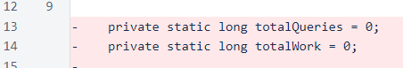The retentionEdgeList and frozenEdgeList fields have been replaced with recentLists.
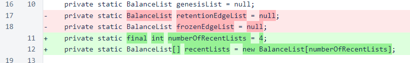The accountSetHeight field has been removed. The new process for updating the account set is performed each time the frozen edge changes.
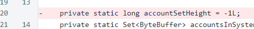The balance-list map has been changed to a concurrent map to improve thread safety.
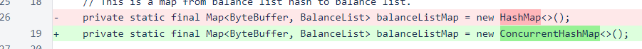A new method, recentBalanceListForHeight(), has been added to provide balance lists for block requests. The eliminates the possibility of spikes in computational load due to such requests asking for lists that are costly to derive. This method will return a balance list if one for the specified height is already available. Otherwise, it will return null.
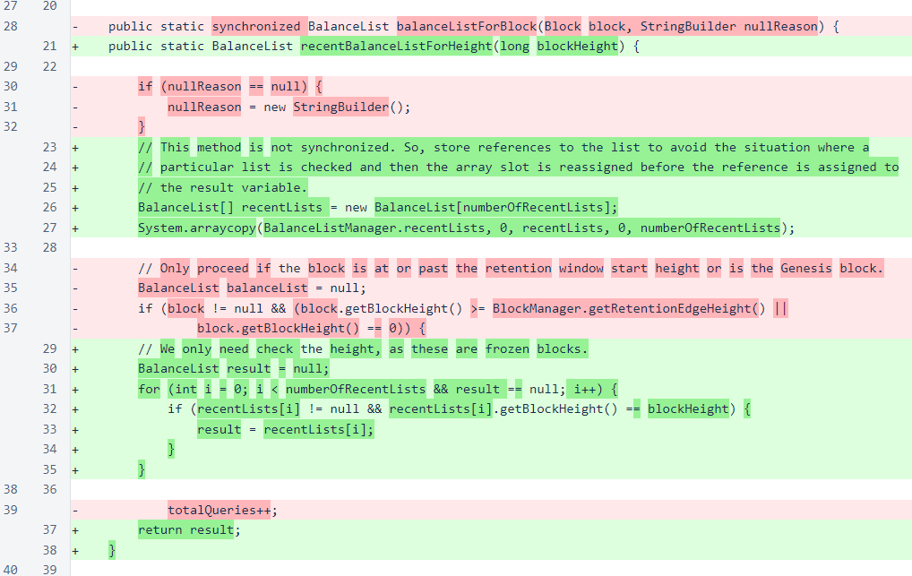The balanceListForBlock() method has been simplified and limited in what balance lists it will produce. If the requested balance list is for the Genesis block or is a saved balance list near the frozen edge, the balance list is always returned. Otherwise, the balance list is only produced if the frozen-edge balance list has not been set or if the requested list is one block past the frozen edge.
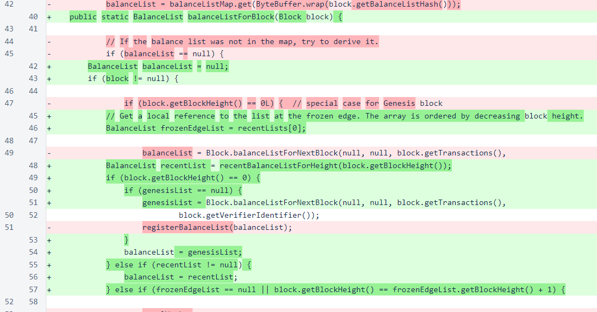The registerBalanceList() method now strictly limits the size of the balance-list map. In future versions, this limiting will be refined to keep the balance lists most likely to be used again, but the important consideration now is imposing a limit, no matter how indiscriminate, to ensure that the balance-list map does not grow unbounded.
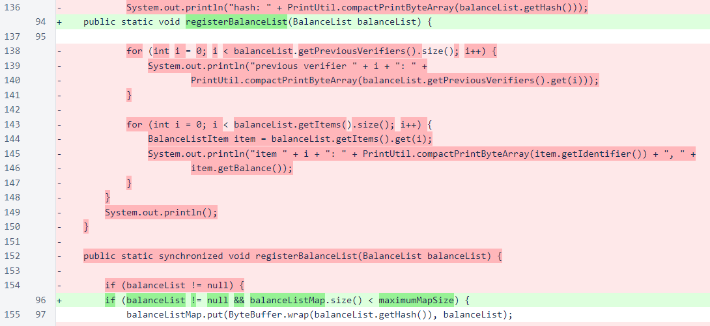Generation of the accountsInSystem set and updating of the frozen-edge list have been moved from this method to the updateFrozenEdge() method.
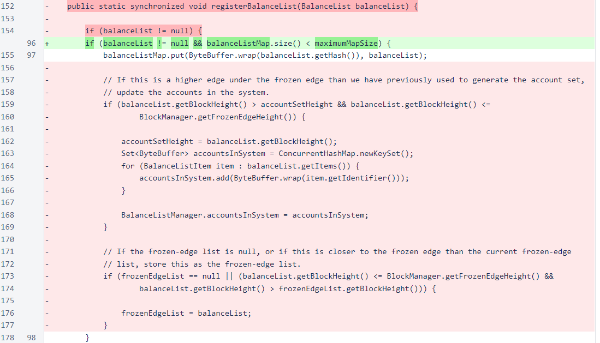The cleanMap() method has been replaced with updateFrozenEdge(). This method still clears the map of balance lists, but it only adds the frozen-edge list back to the map. The Genesis list was unnecessary, and balance lists derived from the retention-edge list were typically too costly. The new method also generates the accountsInSystem set and pushes the frozen edge list to the recentLists queue.
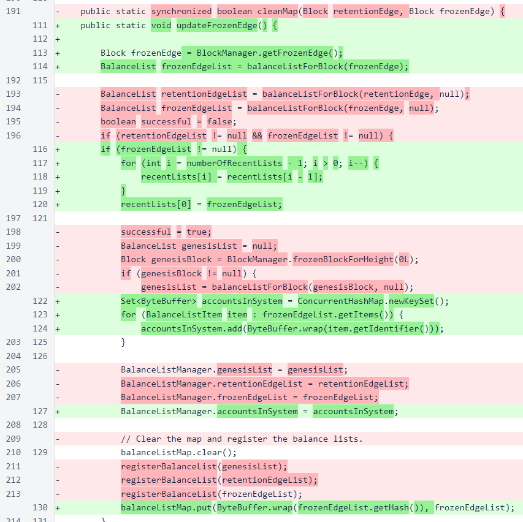You will notice that all invocations of the BlockManager.balanceListForBlock() method have changed due to removal of the StringBuilder argument. This was used at one point for debugging, but it has been unused for quite some time.
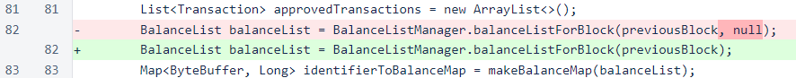In BlockManager, the new BalanceListManager.updateFrozenEdge() method is called in the initialization method and when a block is frozen. Also, loading of the trailing-edge balance list has been removed, as the balance-list manager no longer attempts to derive balance lists behind the frozen edge.
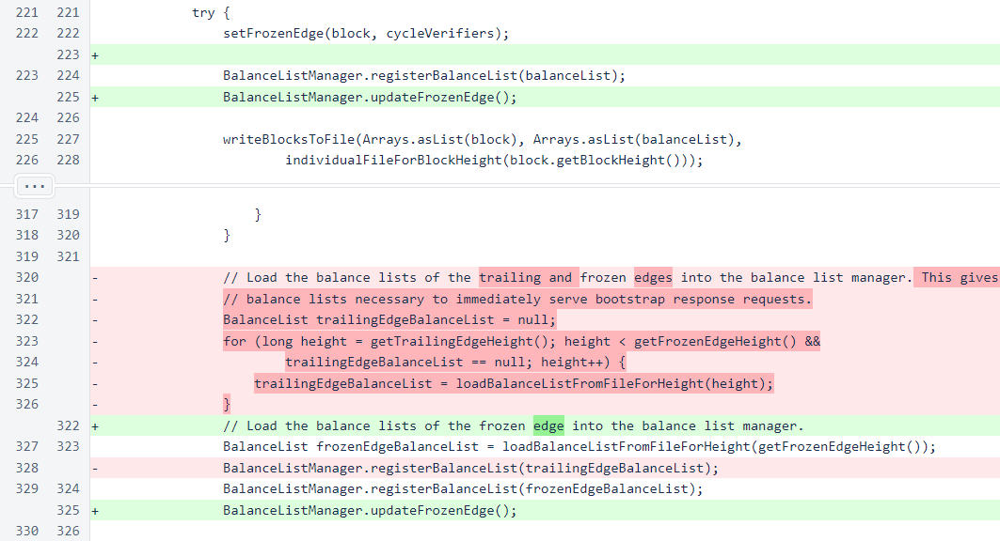In BlockManagerMap, the call to BalanceListManager.cleanMap() has been removed, because that method has been replaced with BalanceListManager.updateFrozenEdge().
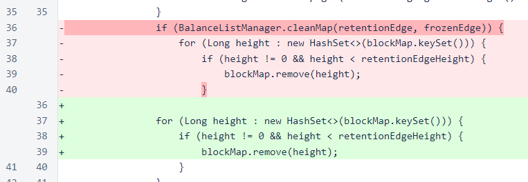In Transaction, BalanceManager.getFrozenEdgeList() is now used to get the frozen-edge balance list. This eliminates a nested conditional statement in the code, which is why this small change affects so many lines.
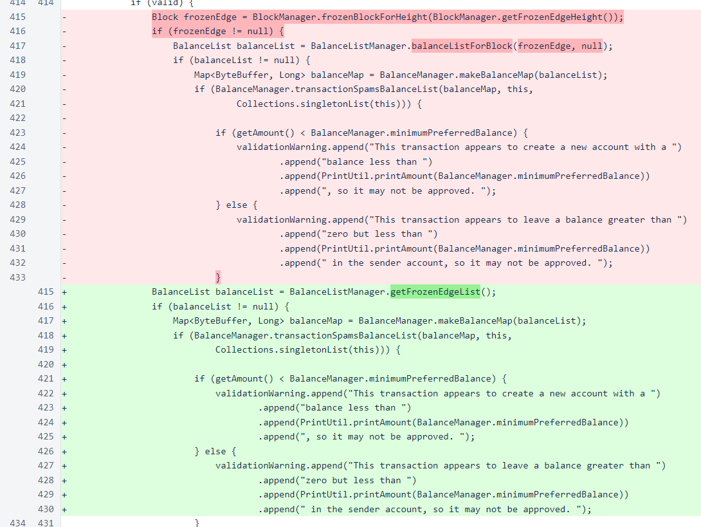In Verifier, the rejoinCount field has been removed. It was used to track how often a node detected that it was no longer receiving messages and needed to send new node-join messages to reestablish connection to the mesh. The rejoin mechanism was replaced long ago by the continuous reconnection process that sends a small number of node-join messages after each block is frozen, and this counter has been unused since then.
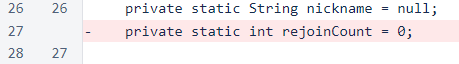A field has been added for initialization time. This will likely be added to the private version of the status response in a later version.
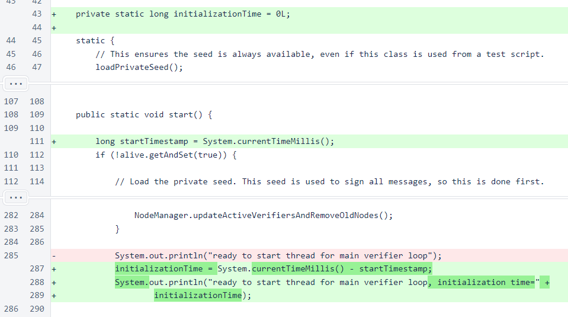In BlockResponse, use of BalanceListManager.balanceListForBlock() has been replaced with BalanceListManager.recentBalanceListForHeight() to ensure that balance lists are not derived due to incoming requests.
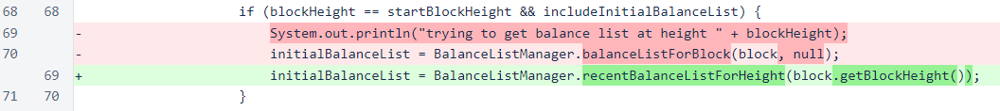